What Physical-World Agents Should Compute Instead of Infer
An agent should not re-derive camera geometry inside a prompt. We make the split between LLM inference and tool computation a measurable design decision, taken sub-task by sub-task, and test it on real industrial imagery.
An animated walkthrough: the grounding failure, the delegation loop, why visibility is a projection, the delegated retrieval pipeline, the LLM as tool maker, and the held-out results.
Animated walkthrough (about 2 minutes, no audio). Numbers come from the paper's tables; camera poses in the retrieval segment are synthetic.
An operator at an industrial site asks for images of one asset: from a given side, at close range, or from several viewpoints. The request is simple for a person. For an agent, part of it is language and part of it is camera geometry.
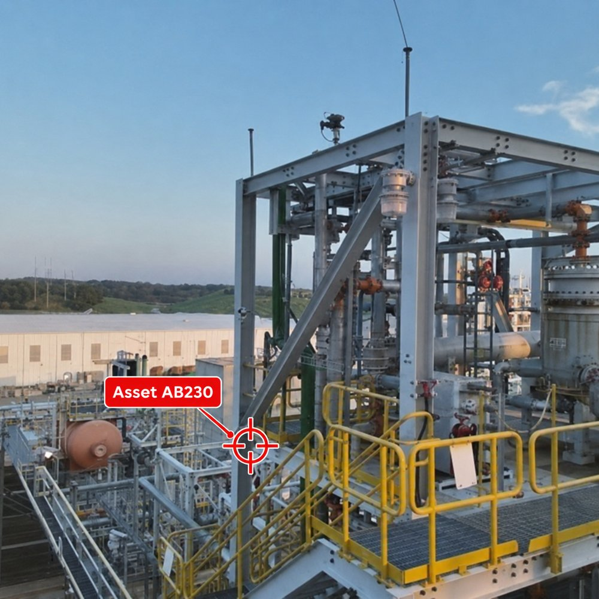
Survey frame with projected asset (paper)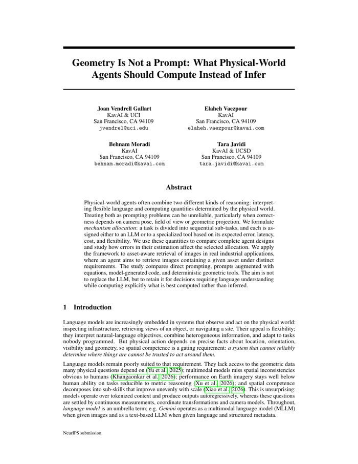
Physical-world agents often combine two different kinds of reasoning: interpreting flexible language and computing quantities determined by the physical world. Treating both as prompting problems can be unreliable, particularly when correctness depends on camera pose, field of view or geometric projection. We formulate mechanism allocation: a task is divided into sequential sub-tasks, and each is assigned either to an LLM or to a specialized tool based on its expected error, latency, cost, and flexibility. We use these quantities to compare complete agent designs and study how errors in their estimation affect the selected allocation. We apply the framework to asset-aware retrieval of images in real industrial applications, where an agent aims to retrieve images containing a given asset under distinct requirements. The study compares direct prompting, prompts augmented with equations, model-generated code, and deterministic geometric tools. The aim is not to replace the LLM, but to retain it for decisions requiring language understanding while computing explicitly what is best computed rather than inferred.
A single multimodal call to gemini-3.7-flash, prompted “Highlight the vessel AB230”. When the stencilled
tag is legible, the box is right. When the same asset is seen obliquely with its tag cropped, the model still answers found=true,
and boxes the wrong object.
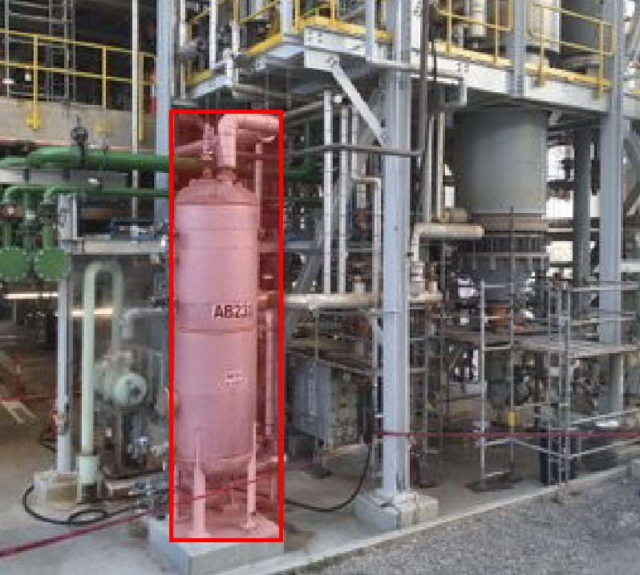
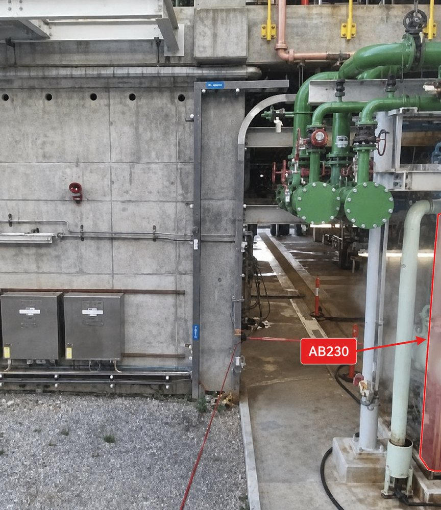
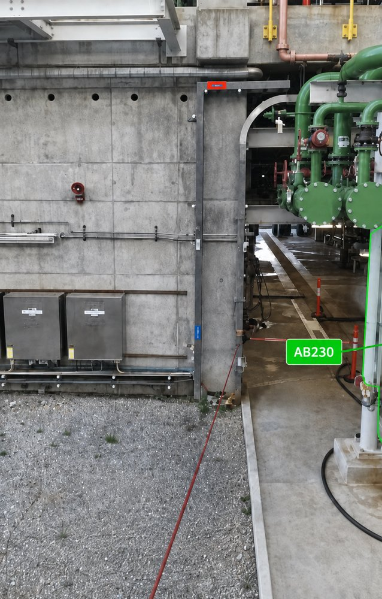
Start with the LLM doing everything. Measure each step. Build a tool for the weakest one, and keep it only if it lowers the measured design loss by more than a margin. Repeat, then freeze the allocation for deployment. Step through the loop below, or press play.
Measured design losses from the paper (Table 4). The evaluator visits the weakest step first: visibility, then retrieval, then selection, then parsing. Three tools are accepted; the parser tool is rejected because it is brittle to paraphrases.
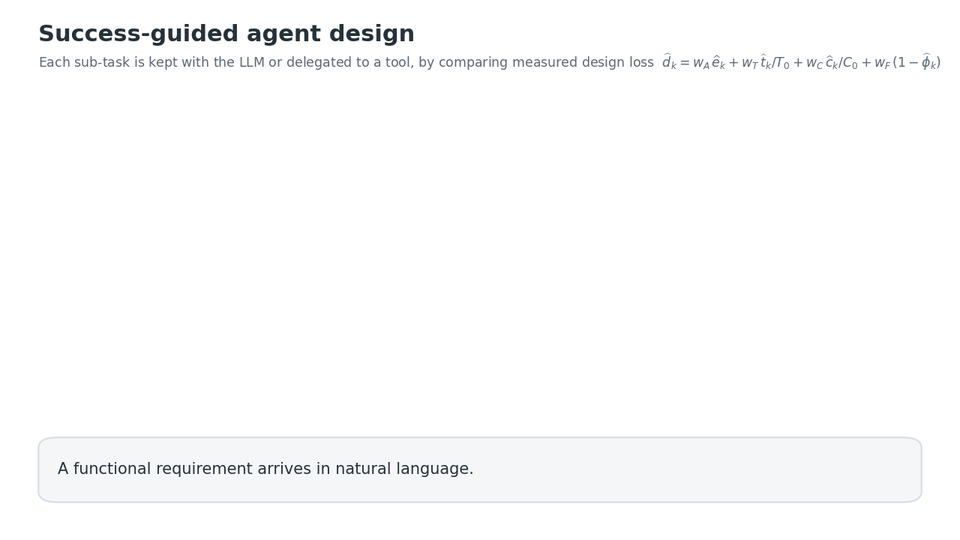
A task h:\mathcal X\to\mathcal Y is decomposed sequentially. Each sub-task can be run by LLM inference f_k or by a tool \tau_k; an allocation picks one per step:
Each mechanism is described by error e_k, latency t_k, cost c_k and flexibility \phi_k, the fraction of request variants it serves without being rewritten. A union bound turns the per-step numbers into a certificate on the whole agent, with no independence assumption:
Weighting the four terms gives a local design loss per step, and the allocation that maximizes the certified success score decomposes into independent per-step choices:
Mechanism attributes are the measured Case B values (Table 4). Move the weights to see which sub-tasks stay with the LLM. For example, raise w_F above about 1.41 and selection returns to the LLM.
| Sub-task | d(fk) LLM | d(τk) tool | Δk | Decision |
|---|
| f₁ | τ₁ | f₂ | τ₂ | f₃ | τ₃ | f₄ | τ₄ | |
|---|---|---|---|---|---|---|---|---|
| error e | 0.02 | 0.15 | 1.00 | 0.00 | 1.00 | 0.00 | 0.50 | 0.02 |
| latency t (s) | 0.35 | 0.001 | 2.40 | 0.89 | 20.86 | 0.006 | 1.20 | 0.0002 |
| cost c (k tokens) | 0.6 | 0 | 12.0 | 0 | 23.8 | 0 | 0.35 | 0 |
| flexibility φ | 0.95 | 0.30 | 0.90 | 0.60 | 1.00 | 0.50 | 1.00 | 0.40 |
T₀ = 1 s, C₀ = 10⁴ tokens. These are development estimates from one query; the frozen evaluation below tests whether the design generalizes.
One surveyed industrial site: 109 catalogued assets and about 31k geo-located frames, each with position, yaw, gimbal pitch and altitude. The chips under each case show the final allocation, step by step.
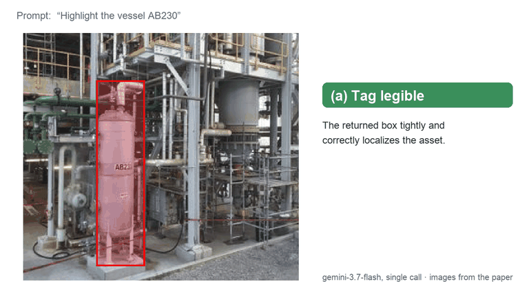
The all-LLM baseline merges identity and localization into one call and fails confidently when the tag is unreadable. Localization goes to a back-projection tool; the model keeps appearance checks such as occlusion and blur.
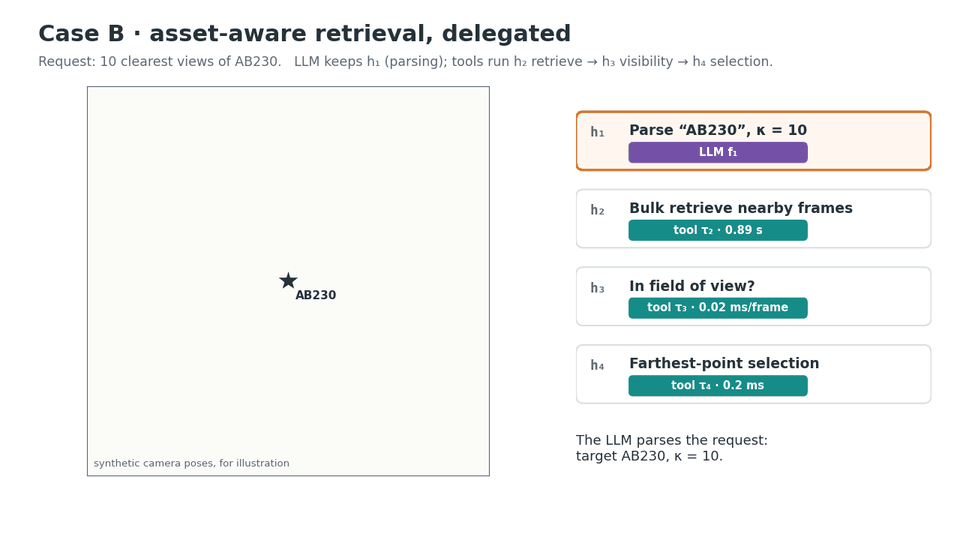
Every all-LLM configuration returns 0% in-frame on the development query, even with high reasoning effort. Farthest-point selection reaches 50% on the raw pool and 100% after the FOV filter: the same mechanism, in a different order.
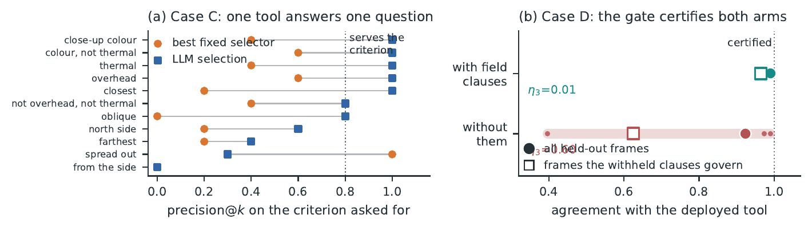
“Overhead”, “north side”, “thermal”, “close-up colour, not thermal”: a fixed selector has nowhere to put the criterion and serves 1 of 11. The LLM serves 7. Asking the model once, offline to compile each criterion into a scoring function serves 9, at 0.025 s and no serving tokens. Compilation fails where the request is ambiguous, not where it is complex.
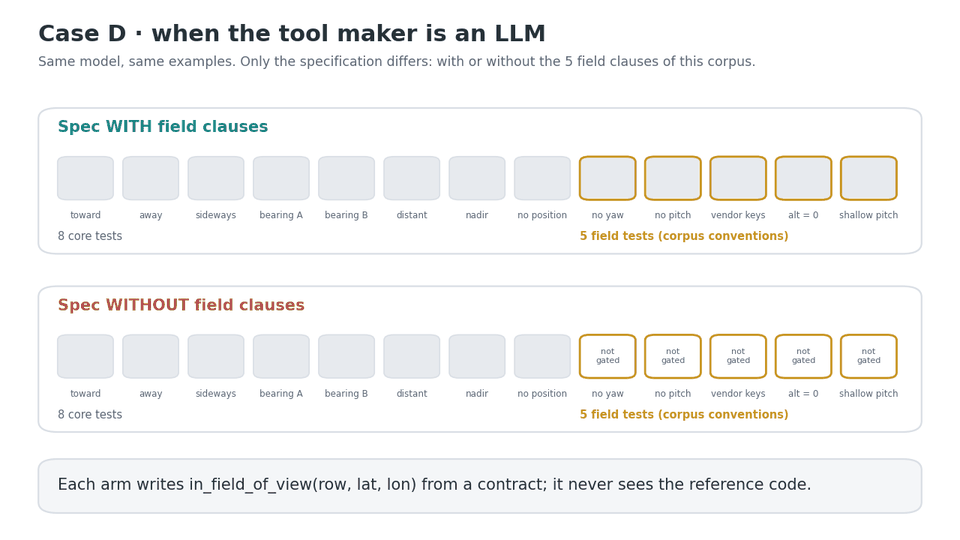
Given a contract, three examples and a description of the test suite, the model writes the visibility tool and repairs it from failing assertions. Both arms pass their own gate. Without the five field clauses, the tool cannot recover the corpus conventions: 0.625 vs 0.964 agreement on the frames they govern.
The single-call prompt gives the model every quantity it needs, including the bearing from camera to asset, and describes the decision procedure explicitly. It still fails, because the answer is a composition of those quantities. The tool computes it:
The four corner rays are intersected with the ground plane (range-clamped so shallow pitches stay bounded), and a ray-casting test checks whether
the asset lies inside the footprint. The answer has three values: in, out, or pose unknown.
Even handing the model the exact projection equations gives a precision of only 0.653. Letting it write and run the code repairs precision (0.982), which suggests the model can build the procedure, but cannot reliably execute it inside its forward pass.
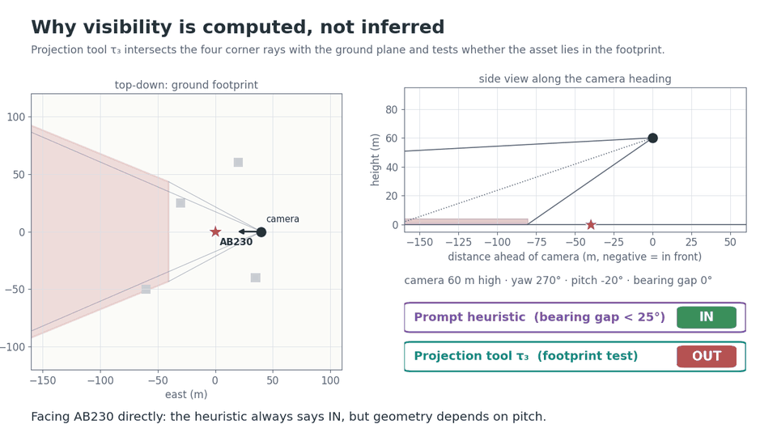
24 assets disjoint from every development target, chosen by a rule fixed in advance. Labels come from an independent projection oracle (full 3-D rotation, focal length and roll) and from pixel adjudication of 435 frames, 228 of them by a human. Every arm sees the same 120 frames per asset, κ = 10, 3 repeats.
| Mechanism at h₃, h₄ | Precision (strict) | Coverage@κ | Latency | Tokens |
|---|
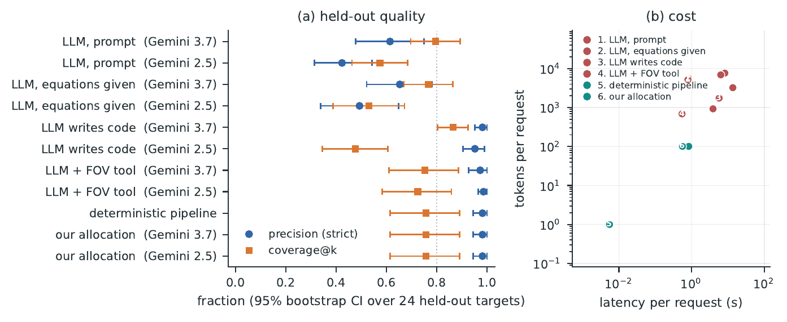
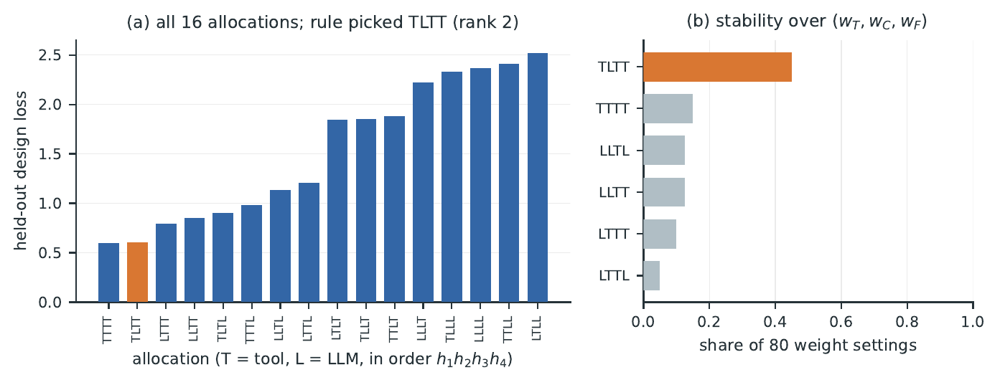
| Reference | Mechanism | Precision | Recall | F1 |
|---|---|---|---|---|
| Merged pixel labels | Deployed FOV tool | 0.900 | 0.131 | 0.229 |
| Independent oracle | 0.833 | 0.687 | 0.753 | |
| Human-only subset | Deployed FOV tool | 1.000 | 0.110 | 0.198 |
| Independent oracle | 0.837 | 0.932 | 0.882 |
If every estimated local loss is within \eta_k of its true value, the per-step argmin is near-optimal for the whole design:
and a margin \delta_k\ge2\eta_k ensures every accepted tool strictly lowers the true local loss. The proof is a three-line telescoping argument.
With n_k(m) Bernoulli observations per mechanism, simultaneously for all steps and mechanisms with probability 1-\delta:
With 24 targets the slack is 0.347 for most steps; only visibility, estimated from 6,619 frame-level judgements, reaches 0.021. About 1,150 independent units would bring every step to 0.05.
Sensitivity: if deployment shifts each attribute by at most ε, a measured LLM–tool gap larger than 2\epsilon_{d,k} keeps its sign. Under the paper's operating point, parsing (0.143) and selection (0.727) are the most sensitive decisions; retrieval (1.633) and visibility (7.632) are robust.
@inproceedings{vendrell2026geometry,
title = {Geometry Is Not a Prompt: What Physical-World Agents Should Compute Instead of Infer},
author = {Vendrell Gallart, Joan and Vaezpour, Elaheh and Moradi, Behnam and Javidi, Tara},
booktitle = {NeurIPS 2026 Workshop on Physical World AI (PhysWorldAI)},
address = {Atlanta, GA},
year = {2026}
}